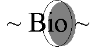

I'm a recent graduate of the Visual Arts Program majoring in Intermedia at the University of Regina.
Exhibition History
"RIPARIAN Habitat", group exhibition February 1998, part of superposition: The Art & Science Fari at The Fifth Parallel Ary Gallery, University of Regina.
"hyperdeborialforestationtext", Public Installation January 1997, Regina Market Square.
"Timescapes & Reconcilliation", Solo Exhibition December 1999, The Fifth Parallel Art Gallery, University of Regina.
"Joan Interactive", Colaberative Installation April 2000, Neutral Ground.
"American Shrimpers", Group Exhibtion May 2000, MacKenzie Art Gallery.oup Exhibtion May 2000, MacKenzie Art Gallery. ie Art Gallery.